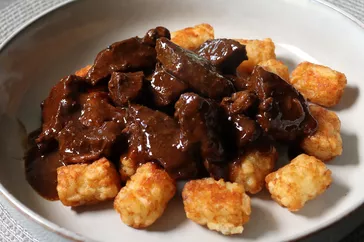

Beef Tips and Tots

Description
This classic beef tips recipe by Chef John is a comforting and budget-friendly
way to transform tough cuts of beef into a delicious meal. It starts with 1.5
pounds of beef round steak seasoned with kosher salt and freshly ground black
pepper. The meat is seared in a hot pan with vegetable oil, creating a flavorful
crust. Then, garlic and tomato paste are added for a savory kick, followed by a
luscious sauce made by combining butter and all-purpose flour. Low-sodium beef
broth is poured in, and the mixture is simmered until the beef becomes
melt-in-your-mouth tender. This hearty dish is traditionally served over crispy
frozen potato nuggets, like Tater Tots®, for a satisfying and nostalgic meal.
Alternatively, you can customize it with toppings like diced red onion, grated
Cheddar cheese, and freshly sliced green onions or serve it over mashed potatoes
for a comforting twist.
Chef John's beef tips are a perfect example of how simple ingredients and a little
time can turn humble, inexpensive cuts of beef into a flavorful and satisfying dish.
Whether you're topping Tater Tots® or creamy mashed potatoes, this recipe offers a
delightful and comforting meal that's sure to please.
ingredients
- 1 ½ pounds beef round steak
- 1 teaspoon kosher salt, or to taste
- ½ teaspoon freshly ground black pepper
- 1 tablespoon vegetable oil
- 2 teaspoons tomato paste
- 2 cloves garlic, minced
- 4 tablespoons butter
- 2 tablespoons all-purpose flour
- 2 ¼ cups low-sodium beef broth
- 1 (28 ounce) package frozen bite-size potato nuggets (such as Tater Tots®)
Directions
- Slice beef into 3/4-inch strips; then slice these pieces, at an angle, into smaller "tips." Season beef with
salt and pepper.
- Heat oil in a large skillet over high heat until shimmering. Transfer in beef, arranging in a single layer.
Let the meat sear until browned, 3 to 5 minutes, before turning over and browning the other side.
- Reduce heat to medium and add tomato paste, garlic, and butter. Stir everything until the butter melts, and
then stir in the flour. Cook and stir for 1 minute.
- Stir in broth. Raise heat to high and bring to a simmer. Reduce to low, cover, and cook until beef is
starting to get tender, about 1 hour and 15 minutes.
- Meanwhile, preheat the oven to 425 degrees F (220 degrees C).
- Uncover, turn heat to medium, and simmer, stirring occasionally, until the sauce has thickened, and the meat
is tender, about 30 minutes.
- While meat simmers, bake potato nuggets in the preheated oven until crispy and heated through, 20 to 25
minutes.
- Taste beef tips and adjust the seasoning. Serve immediately over hot potato nuggets.
Return to Home Screen